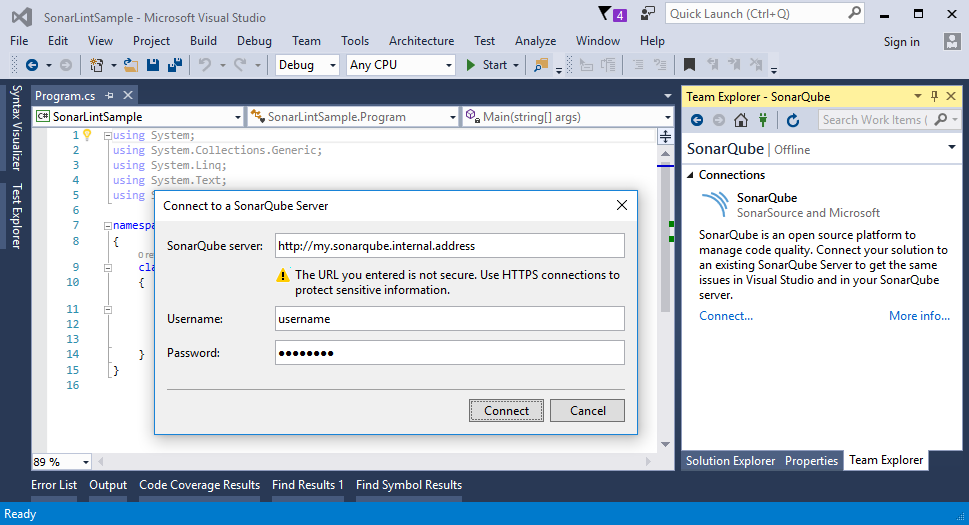

Frequently Asked Questions
-
Which languages are supported?
C#, VB.NET
-
How do I turn off specific rules?
If you feel that one of the rules doesn't give value to you, please report this to us in the SonarLint Google Group. We'd like to give the best out-of-box experience that suits everyone, so maybe the rule needs to be tuned or maybe it should be disabled by default.
At the same time, you can disable any rule through the Visual Studio Rule Set Editor. To do this, in the Solution Explorer, locate the project on which the rule reports, then in the context menu of "References/Analyzers" select the "Open Active Rule Set" menu item. This opens a window with all rules. You can enable/disable rules or even change their default severity. Saving your modifications creates a .ruleset file in the project.
If you have many projects, you might want to share the same .ruleset file between them. This can be achieved by modifying the .csproj files, and specifying the
CodeAnalysisRuleSetproperty. -
How can I connect SonarLint to my SonarQube server?
First, you'll need a SonarQube server, and a SonarQube project that you'd like to associate to the current solution. Head over to http://www.sonarqube.org/ for more info.
Considering that everything is set up on SonarQube and you have SonarLint for Visual Studio 2.0+, you can define the connection to the server in Visual Studio by selecting the "Analyze/Manage SonarQube Connections..." menu item. This opens a connection window.  Hit connect, and wait for the server response. If anything goes wrong, you'll get a notification in the Team Explorer pane. You should see the list of projects on your SonarQube server. Right click and choose "Bind" to connect the solution to the SonarQube project. This pulls down the settings from the SonarQube server, and adds NuGet analyzer packages to your projects. After the setup, you'll see the configured issues showing up inside Visual Studio.
-
Why are some rules disabled by default?
We aim to have the best out-of-box experience with SonarLint. This means that controversial rules are not enabled by default. You can choose to enable them by editing the ruleset file.